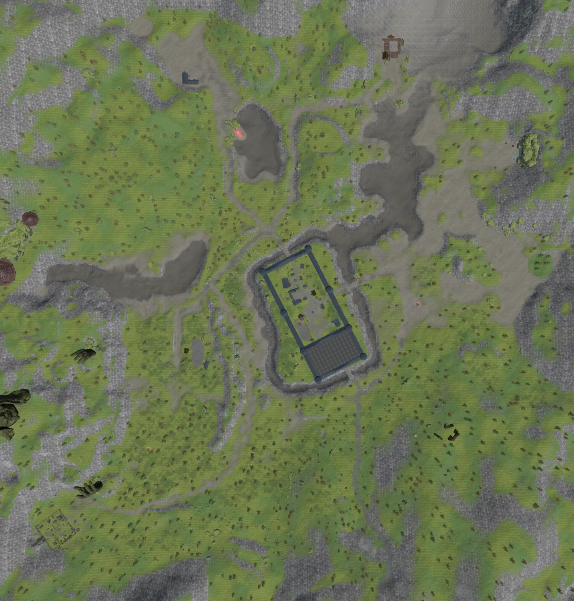

Survey Helper
Serbule
Serbule Hills
Eltibule
Ilmari
Kur Mountains
Find Surveys
Clear
Renumber on visit

Chat Log Input
Drag & drop
a chat log .txt file
How To Use
Check all your surveys in-game, one at a time.
Drag the gold marker to where you stood when checking.
Paste your chat log above and click Find Surveys.
Click numbered dots on the map to mark them visited.
Plan your route and survey away!